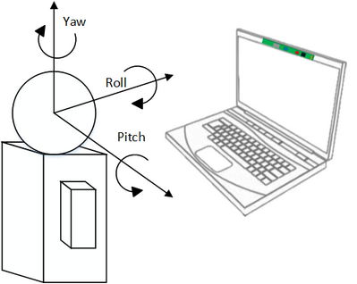

Namespace Hierarchy
C++
PXCFaceData::PoseEulerAngles
C#
PXCMFaceData.PoseEulerAngles
Java
Definition
struct PoseEulerAngles {
pxcF32 yaw;
pxcF32 pitch;
pxcF32 roll;
};
class PoseEulerAngles {
Single yaw;
Single pitch;
Single roll;
float yaw;
float pitch;
float roll;
Description
The PoseEulerAngles structure describes the face pose parameters. The Euler angles are as illustrated in Figure 73.

73: Face Euler Angles Illustration
Members
yaw
The yaw value, in degrees. A positive yaw value indicates that the face is looking to the right.
pitch
The pitch value, in degrees. A positive pitch value indicates that the face is looking up.
roll
The roll value, in degrees. A positive roll value indicates that the face is leaning towards the right shoulder.